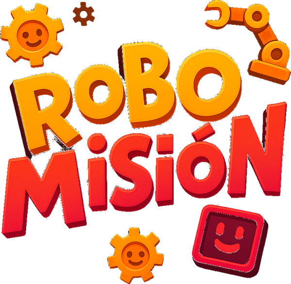
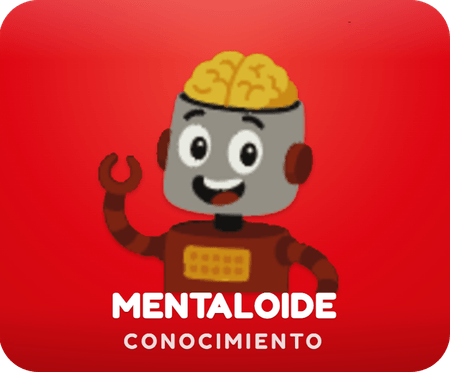
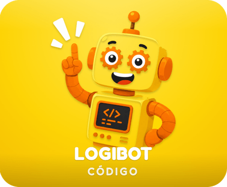
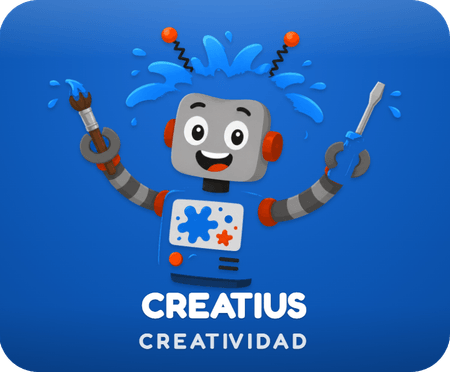
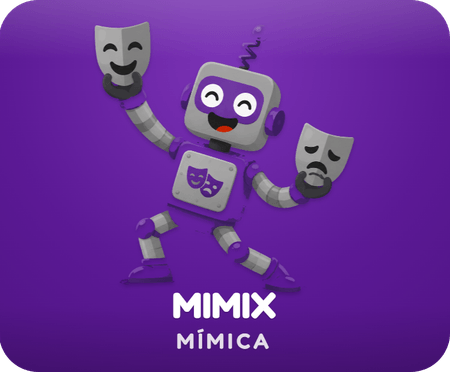

🤖 ROBOMISIÓN
El juego de robótica en equipo
El juego de robótica en equipo
¿Quiénes van a jugar? 🎮
+ Agregar equipo (máx. 4)
🚀 ¡Comenzar misión!
↺ Reiniciar
Equipos
Elige una categoría




Piezas recolectadas
← Menú
Tu reto
1:00
tiempo
Siguiente turno →
🏆
¡GANARON!
¡Completaron el robot con todas las piezas!
🔄 Jugar de nuevo